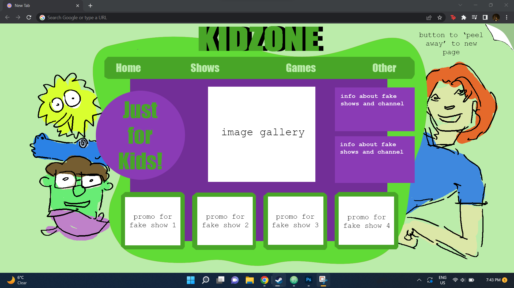
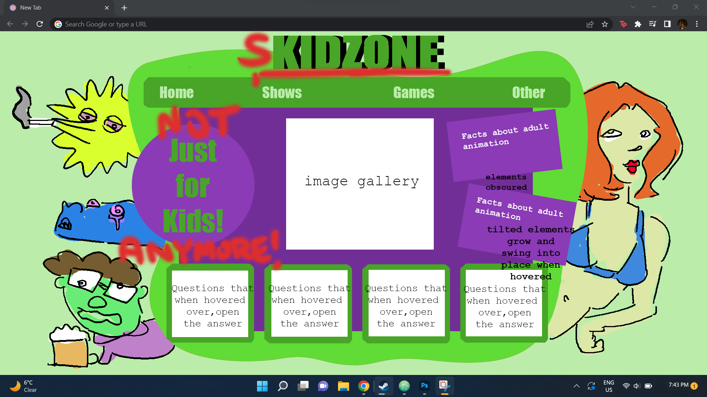
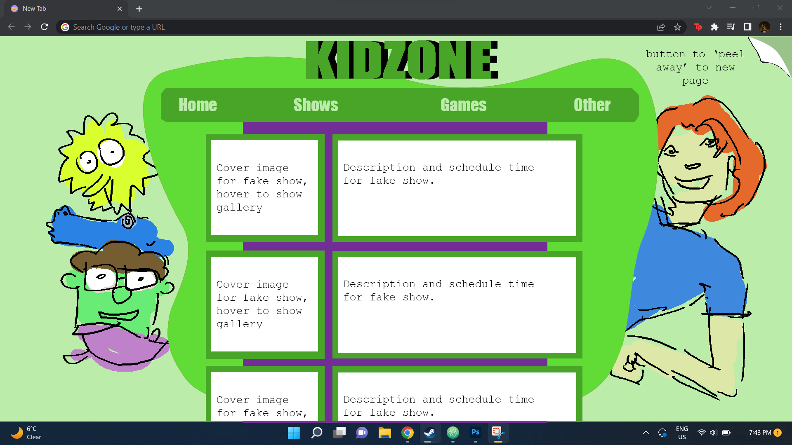
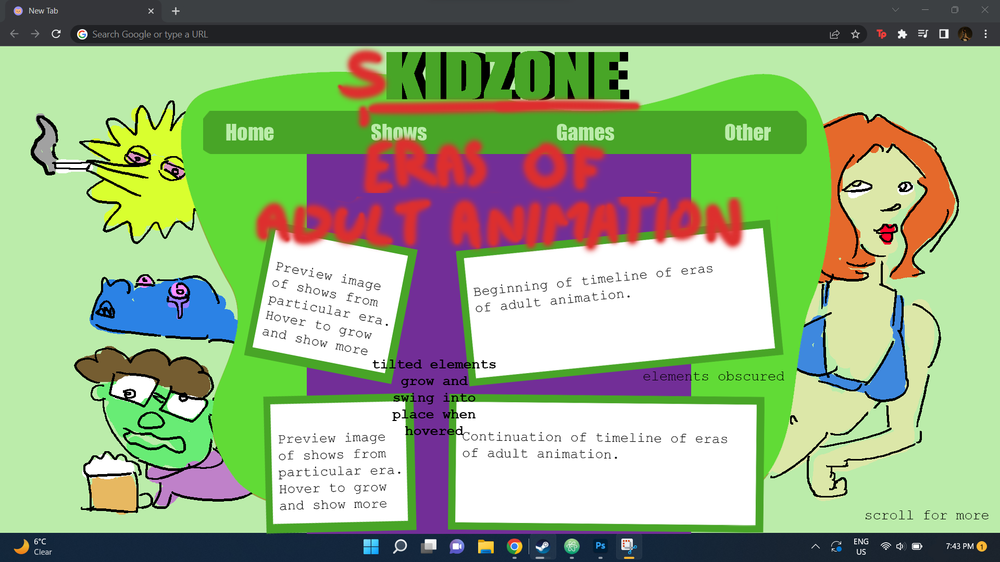
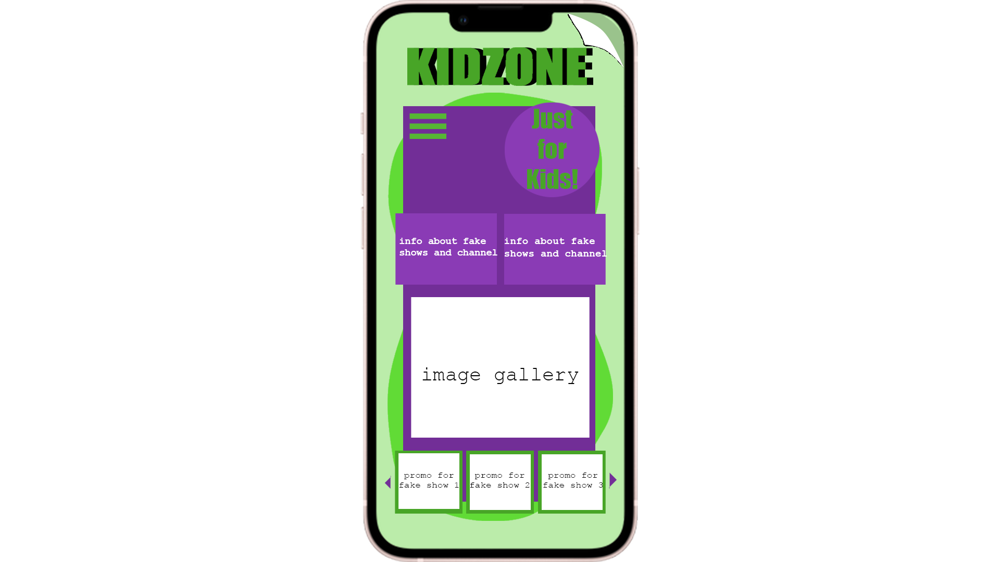

The home page of the website appears as a kids website on the surface level. It showcases images and promos for fake characters. There is a button in the top right that unveils the true website when clicked.

When the toggle in the top right is clicked, the true website is revealed. The page is not only vandalised, but the text information changes into info and ideas about the popularity of the theme.

The 'shows' page of the website will, on the surface level, show info, schedules, and images for the fake shows.

The uncovered 'shows' page will transform into a timeline of the theme's development. This will talk about the development of adult animation and the different eras that came along the way.

This is what the mobile presentation of the home page will look like. It loses the side illustrations but still delivers the same idea.